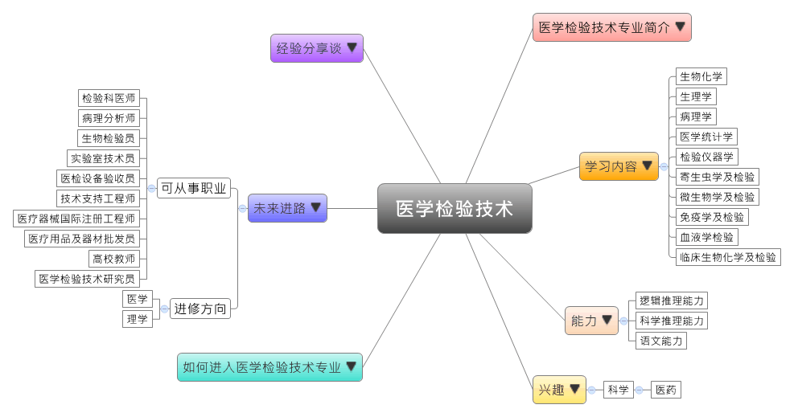
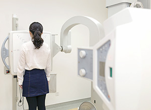

- 专业大观园
-

- 专业介绍
-
什么是医学检验技术？
医学检验是运用现代物理与化学的方法来进行医学诊断，通过实验室的技术与先进医疗仪器设备为临床诊断与各种治疗过程提供依据。而随着物质生活的逐步提高，人们对医疗服务的质量与需求不断提高，所以医学检验专业的人才需求不断增加，当然就业的前景也相对乐观。在职场上，毕业生适合到医疗行业从事检验专业人员；在生活中，抽血、验尿等都是基本的医学检验项目，为了更了解自己的健康状况，我们也时常进行生化检测、微生物鉴定，或者是乙肝、丙肝等等的检测。
医学检验技术专业除了培养学生具有基础与临床医学、医学检验的理论与知识外，学生也学习使用各种光电仪器、化学试剂来完成检测与分析，成为能在各级医疗机构、血站，以及防疫部门从事医学检验的高级专门人才。

医学检验技术实验室中进行实验  医检技术课程中演练设备操作
- 学习内容
-
医学检验技术专业学生主要学习基础与临床医学，以及与医学相关的检验理论与技术。医学检验技术是应用性很强的专业，所以学生须接受各种医学检验仪器的操作，以及临床医学与卫生检验的专业训练。
本专业学习方向通常分为三类：临床医学类、基础医学类和检验技术类；其他学校也有开设等课程，为学生未来就业做好准备。医学检验技术专业主干课程有：生物化学、医学统计学、分析化学、检验仪器学、生理学、病理学、系统解剖学、寄生虫学及检验、微生物学及检验、免疫学及检验、血液学检验、临床生物化学及检验……等。此外，学生须加选临床实习课程进行选修。
本专业可以习得的知识与获得之能力、技能列点：第一，具备医用化学、医用物理和基础医学的理论与知识，以及常用的临床医学检验与分析仪器的操作技能；第二，具备临床疾病、健康检查的初步诊断知识与技能；第三，了解我国卫生工作及临床实验管理的相关政策，并随时更新全球医学检验的发展动态。
- 能力
-
医学检验技术专业学生，需具备以下能力：
相关性向能力 说明 科学推理能力  具备卫生工作的分析与检验能力
具备卫生工作的分析与检验能力
具有从事样品体外处理与分类的能力逻辑推理能力 能正确解读检验结果与病征的关系
了解医学、卫生检验的标准程序与原则语文能力 具备理解最新医检技术的外语能力
能以深入浅出的方式来解释医检的结果
- 兴趣
-
若你对下列活动或事物有高度兴趣，可考虑进入医学检验技术专业学习：
科学 医药 能胜任大量且重复进行的工作
善于运用科学方法找出问题的解答
不怕抽血、验排泄物等的临床检验与分析活动
- 如何进入此专业
-
下面列举开设医学检验技术专业的211工程重点大学院校：
- 未来进路
-
可从事职业
医学检验技术专业的就业前景相当乐观，毕业生可以选择到医药公司、医疗诊断机构、血站、红十字会医疗机构、疾病防控中心等担任研发工程师、科研助手或检验专业人员；又或是在医院检验科、输血科、临床科室实验室、体检中心检验科、生殖医疗中心、遗传实验室、新生儿筛查实验室从事商品检验、海关检疫、试剂研制，以及相关产品的营销；最后则是在各高等院校或科研部门从事学术、教学等工作。在工作职场上皆能发挥试剂研发、医疗检验等专长：
行业 职业 医疗卫生服务 检验科医师、医学检验技术员、病理分析师、生物检验员 健康科学研究和技术服务 秘书、助理、业务员、交易员 文教事业 实验室技术员、质量管理专员、医检设备验收员、医疗器械工程师、技术支持工程师、医疗器械国际注册工程师 健康咨询服务 健康管理师 其他与健康相关的服务 检验试剂销售人员、医疗用品及器材批发员、医疗设备代理人员 教育 高校教师 科学研究 医学检验技术研究员 进修方向以下列举医学检验技术专业毕业生可以继续修读之学科门类、一级学科与硕士点：
学科门类 一级学科 硕士点 医学 临床医学临床检验诊断学、妇产科学 临床医学（专业硕士）临床医学、临床检验诊断学 理学 生物学遗传学、生物化学与分子生物学、生物技术与工程 注：临床医学硕士报考资格 临床医学硕士报考资格
临床医学硕士报考资格1.具有国家承认学历的大学本科毕业人员
2.具有下述条件之一的同等学力的人员：
（1）获得国家承认的高职高专毕业学历后满2年或2年以上
（2）国家承认学历的本科结业生和成人高等学历教育应届本科毕业生
- 经验分享谈
-
医学检验科幕后英雄——潘柏申教授
1977年，高考恢复，潘柏申如愿考入上海第一医学院医疗系。大学毕业后，他服从分配，来到中山医院耳鼻喉科工作。1987年，院领导给了潘柏申一个机会，让他去检验科试试。没想到这一“试”，却让他和医学检验结下不解之缘。
2004年，中山医院门急诊新大楼启用，检验科有了新家。此后一段时间，潘柏申每天都在思考，亲自绘制了新家的第一张设计图。从电源、水处理到通风系统，从仪器安放到抽血窗口的安排，他都仔细斟酌修改。他们特意请来美国管理专家，测算检验人员每一个动作需要的时间。在他的努力下，科室400余个检测项目全面提速。各类生化报告由四小时缩短至两小时；门诊血常规报告缩至半小时，大部分病人当天就能取到检验报告。“我们下午5点就全看完了，还能赶回家吃晚饭。”一位附近小城的患者欣喜地表示。
潘柏申强调“诊断疾病，就像在走迷宫。患者会描述很多症状，但多数是无效的信息。而检验，就好像‘减法器’，能帮医生逐一排除假象，抓住关键信息。”为了能更大限度地发挥检验科的作用，潘柏申规定，检验人员一旦发现特殊病例，必须亲自打电话给开化验单的临床医生，仔细告知病人检验结果的详细情况，以免误诊、漏诊。这一通电话里的内容，包含着他们无数的经验和学识，早已超越了检验单上冰冷的数字。每每提到“检验科是幕后英雄”类似的称号，潘柏申都会自豪地说“医疗工作没有所谓的台前幕后，我很乐意当一颗悄无声息、却非常可靠的螺丝钉，保证每一份检验报告都精准无误。”【资料来源：中国江苏网 专访“中山检验报告”.】